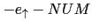

Subsecciones
- Escriba un analizador léxico en Jison
(que suponemos se guardará en un fichero
calc.l)
para una calculadora con números, restas, productos y menos unario
- Escriba el correspondiente analizador sintáctico en Jison
(que suponemos se guardará en un fichero
calc.jison)
para una calculadora con números, productos, restas y menos unario.
Deberá aceptar frases como -2.5, -3.1e2-5e3, -2*3,
etc.
- Añada acciones semánticas a
la gramática del ejercicio
2
para la evaluación de las expresiones
aritméticas. Puede contestar conjuntamente a este ejercicio
y al ejercicio 2
- Explique que conflictos aparecen en el
ejercicio
2 y como los ha resuelto
¿Cómo se resuelven los conflictos en yacc?
¿Cómo se da precedencia a las reglas y a los terminales?
- Escriba el comando para generar el código javascript de la mini
calculadora a partir de los fuentes
calc.jison y
calc.l
- Calcule los FIRST para las variables sintácticas de dicha gramática
(Véase
35.5.1)
- Calcule los FOLLOW para las variables sintácticas de dicha gramática
(Véase la sección
35.5.1)
- Calcule el DFA que reconoce los prefijos viables de dicha gramática
(Véase la sección
36.2
y la sección
36.3.2)
- Simule la antiderivacion a derechas/construción del árbol de análisis sintáctico
realizada usando el DFA construído en el ejercicio
8
sobre la
entrada
'
-1-2'.
En cada momento de la simulación indique cual es la forma sentencial derecha actual y
la posición en la misma (algo como
),
en que posición de lectura de la entrada estamos
(esto es, quién es el token lookahead que se está viendo), en que estado
del DFA estamos y cual es la acción tomada (desplazar o reducir).
Se trata de realizar un proyecto relacionado con el procesamiento de lenguajes.
El objetivo puede ser:
- Diseñar un lenguaje de dominio específico para simplificar cualquier tarea en la que estés interesado:
- Para escribir exámenes,
- Para dibujar árboles,
- Para calcular fechas,
- Para generar emails
- Para escribir música
- Para escribir autómatas finitos
- Para procesar
CSS
- etc.
- Estudiar un traductor existente en profundidad como:
- También puedes proponer tu propio tema relacionado al profesor
Se recomienda para ello organizar equipos de no menos de dos y no mas de cuatro.
Las presentaciones de los proyectos tendrán lugar el último día de clase Martes 21 de Mayo.
Casiano Rodríguez León
2013-05-05